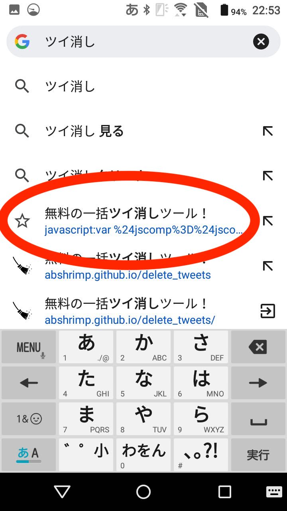

iPhone/iPadでの使い方
① 下のリンク(コード)をお気に入り登録する
いいね消しツール
一方の指で上のリンクを長押し→ドラッグしながら、もう一方の指でお気に入りを開き、ドロップします。
難しければ、「Androidでの使い方」の①から③を行なってください。

画像はSafariですが、Chrome等でも同様です。
② Twitter(X)を開く
ブラウザでTwitter(X)を開いてください。このとき、いいね消しするアカウントでログインしておきます。
③ お気に入りから「いいね消しツール」を選ぶ
Androidでの使い方
① 下のボタンを押してコードをコピーする
② このページをお気に入り登録する
Chromeの場合、メニューの★を選びます。

③ お気に入りの編集を選び、URLをコードに置きかえる

Chromeの場合、追加直後に画面右下に編集ボタンが出るので、押します。
既に入力されているURLを「すべて選択」し、コードを「貼り付け」ます。
④ Twitter(X)を開く
ブラウザでTwitter(X)を開いてください。このとき、いいね消しするアカウントでログインしておきます。
⑤ Twitter(X)の画面のまま、アドレス欄に「いいね消し」と入力し、出てきた「無料の一括いいね消しツール！」を選ぶ

アイコンが★のものを選んでください。
PCでの使い方
① ブックマークバーを表示させる
既にブックマークバーが表示されていれば、この操作は必要ありません。

表示方法
Windowsなど : Ctrl+Shift+B
Mac : command ⌘+shift+B
② 下のリンク(コード)をブックマークバーに追加する
いいね消しツール
このリンクをブックマークバーまでドラッグします。

③ Twitter(X)を開く
ブラウザでTwitter(X)を開いてください。このとき、いいね消しするアカウントでログインしておきます。
④ ブックマークバーの「いいね消しツール」を選ぶ
特徴
- Twitter(X)のいいねを一括削除します
- 完全無料！
- アカウント提携不要
- 一度に10000件の削除が可能
ツール実行において
- 開発者がデータを収集することは、一切ありません
- 条件指定はありません。最近のいいねから順に削除します
- 10000件を超える削除をしようとすると、APIの制限が来る場合があります。その場合、ツールが止まりますが、15分後に回復しますので、再度ツールを実行してください
- いいねした後にサークルから外された、ブロックされたツイートはいいねの削除ができません
注意・利用規約
- 自己責任でご利用ください（本ツールの利用により発生したいかなる直接的・間接的損害に対して一切責任を負いません）
- コードの改変、再配布は禁止します
- 常識の範囲を超えた過度な利用はXのサーバーに負荷をかけますので止めてください
他の人に教えてみる
ver.1.0.0